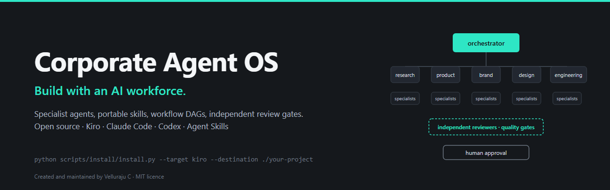

Corporate Agent OS
Build with an AI workforce. Specialist agents, portable skills, workflow DAGs and independent review gates, installed into the coding agent you already use.
- Open source, MIT licence
- Version 0.2.0 (beta)
- Kiro, Claude Code, Codex

- 52Agent Skills
- 58agents
- 22departments, 110 roles
- 10workflow DAGs
- 12quality gates
- 58templates
- 11standards
- 10validators
Why it exists
A single AI chat that writes a plan, builds it and then tells you it is good has no one checking it. Corporate Agent OS splits that into roles. An orchestrator plans the work and hands specialists a written task contract. Independent reviewer agents, not the authors, judge each deliverable at a named quality gate.
It also keeps unproven things labelled as unproven. Facts, hypotheses and assumptions are kept apart in a ledger, and any check that did not run is reported as NOT_RUN instead of being passed quietly.
What it covers, by department
22 departments with 110 roles. Each card below is a department; the text is its mission statement from the repository, and the title links to its page.
Software architecture and technical leadership
Choose the simplest architecture that meets requirements and keep its risks, costs and decisions written down.
Brand strategy and creative
Build a brand that is strategically grounded, distinct from its category and reproducible by others.
Customer success, support and community
Get customers to value quickly, resolve issues honestly and feed real problems back to the product.
Cybersecurity and privacy engineering
Keep threats modelled, controls verified, testing authorised and incidents handled.
Data and AI engineering
Use data and models where they beat deterministic software, with evaluations, privacy, cost control and guardrails.
Product experience and design
Make the product usable, accessible, intentional in appearance and faithful in implementation.
Software engineering
Ship maintainable, secure, tested software in small reviewed increments.
Executive leadership and governance
Set direction, allocate resources, decide trade-offs between functions and stay accountable to owners and the law.
Finance and accounting
Keep the company solvent and honest about its numbers with ranged assumptions and professional review.
DevOps, platform and site reliability
Make software deployable, observable, reliable and reversible without unapproved production changes.
Legal, compliance and licensing research
Identify legal, IP, licensing and privacy exposure early with sources and jurisdictions, and route conclusions to qualified counsel. This function never gives legal advice.
Marketing and growth
Acquire and activate the right customers with true claims, measured experiments and brand consistency.
Naming and intellectual-property screening
Produce distinctive names and preliminary IP screening with honest status, never clearance.
Business operations, communications, risk and knowledge
Keep the company running: process, approvals, communication, risk and knowledge continuity.
People, recruitment and people operations
Build a fair, capable team with clear roles, safe onboarding and healthy operating rituals.
Procurement and vendor management
Buy what the company needs at a known total cost, with contract terms, data handling and exit paths understood.
Product management and operations
Convert validated problems into testable scope, measurable outcomes and a roadmap people can execute.
Quality engineering and testing
Make every acceptance criterion traceable to an executed, reproducible result and keep the release decision independent of the builder.
Research and intelligence
Give every decision dated, triangulated evidence with honest confidence and the disconfirming case.
Sales and partnerships
Sell what exists to customers who need it, with evidence-based forecasts and counsel-reviewed terms.
Business and corporate strategy
State a falsifiable strategic choice, size it honestly and know what would kill it.
UX and customer research
Learn how real people behave, decide and struggle, and make the evidence usable by product and design.
How it works
For substantial work the orchestrator follows the same sequence. The five steps below are the general pattern; the nine workflow DAGs (brand development, business validation, idea to business, product design, product discovery, product launch, product maintenance, security review, software development) arrange the stages differently.
Intake
The orchestrator writes a brief and creates the project workspace and memory ledger.
Plan
Workflow stages become task contracts with owners, write scopes and a named reviewer.
Delegate
Specialists do the work using the host's sub-agent feature, one writer per path.
Review
An independent reviewer judges the result at one of 12 quality gates. A failure goes back as a rework contract.
Human approval
Deploying, publishing, spending, legal filings and similar actions wait for a person.
Platforms
| Host | What is installed | Verification |
|---|---|---|
| Kiro | Skills, JSON agents, steering, hooks, and a Power in Agent Plugins 1.0.0 format | Live-verified on Kiro CLI 3.3.0 |
| Claude Code | Skills, sub-agents, CLAUDE.md | Format-validated against official docs. Not run live. |
| Codex | Skills, AGENTS.md | Format-validated against official docs. Not run live. |
Quick start
Clone the repository, then run the installer with the host you use and the project folder to install into.
git clone https://github.com/Ryha-Technologies/corporate-agent-os.gitpython scripts/install/install.py --target kiro --destination /path/to/projectUse --target claude or --target codex for the other hosts. Run the installer from the cloned repository folder. Then open the project in your host and ask the corporate-orchestrator agent or skill to start.
See the docs page for the installation guide and platform guides.
Honest status
Version 0.2.0 is a beta. Evaluate it before you rely on it.
- Only Kiro CLI 3.3.0 has been verified live. The Claude Code and Codex files were checked against official documentation formats, not run in those tools.
- No model-driven benchmark has been run, so this site shows no performance numbers.
- The repository includes 63 tests, 28 regression cases, 5 golden benchmarks and 10 validators. They are not model-driven benchmarks.
- The legal and naming functions produce research and questions for qualified counsel. They are not legal advice or clearance.
Known limits are listed in known-limitations.md.